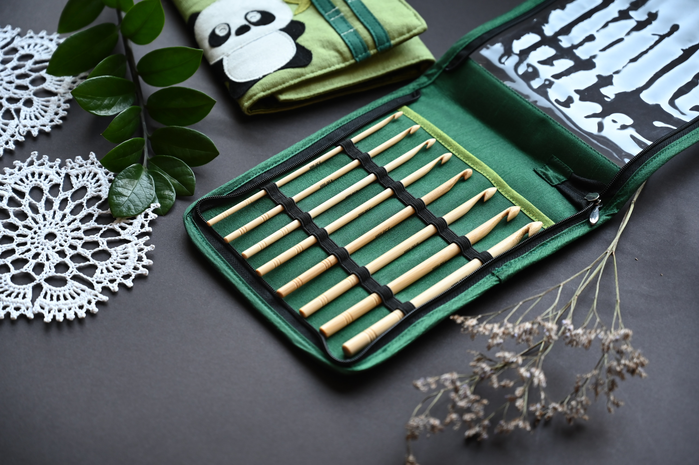

What is Crochet?
Crochet is a kind of yarn technique that uses a hook to interlock yarn into stitches to create items such as textiles and toys.
Crochet Tools
There are many tools that can be used for crochet.
